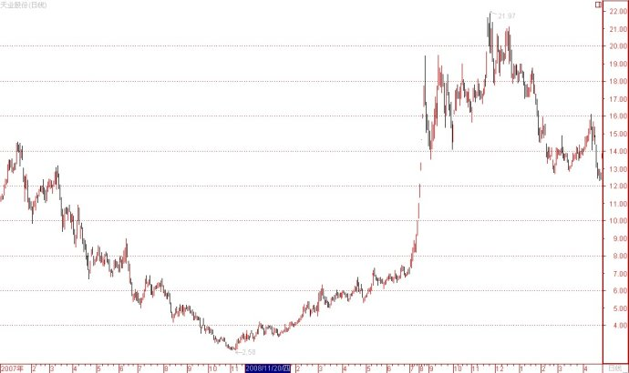
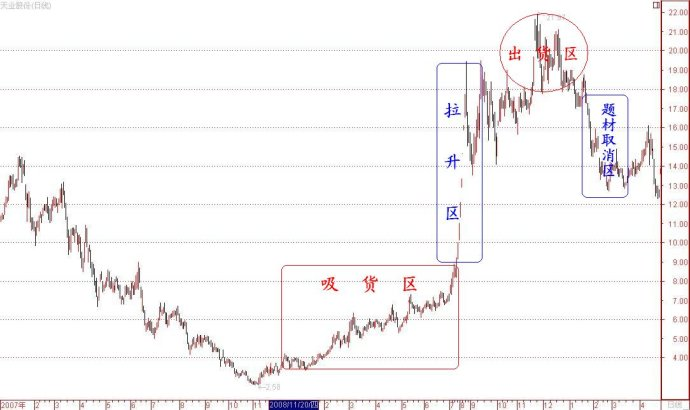
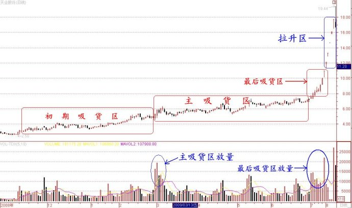
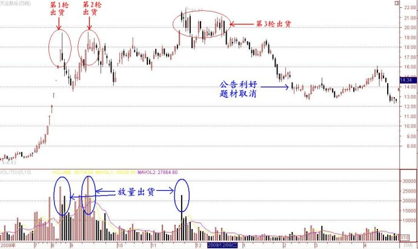

第30篇：产业资本坐庄的深度研究（14）
谷为陵
七、产业资本坐庄成败案例分析
（一）与游资配合型庄家的成败案例
3、成功的题材操纵案例：天业股份(600807)
产业资本通过公告利好题材与游资配合的坐庄方式（简称“题材操纵型”坐庄方式），就是让游资在股价低位完成吸货后，上市公司发布重大利好而将股价拉高，让游资在股价高位完成出货。
这种坐庄方式在吸货、拉高与出货这三个环节均有其特点：其一是吸货方面，在利好题材公告前，该股有一段明显的吸货走势；其二是拉高方面，该种坐庄方式不用庄家动用资金拉升，而是依靠利好题材引发市场的跟风盘的力量就能够使股价暴涨，将股价推高，庄家坐享其成。为达到这一目的，上市公司发布的利好题材一定是市场最热门、最具爆发力、投机性最强的题材，所谓“语不惊人死不休”；第三是游资一旦在股价高位出货后，上市公司一般不会兑现利好题材，会找种种理由将题材“废掉”。上市公司相当于虚晃一枪，在不费任何代价的情况下，就完成一次坐庄过程，其结果是庄家大赚其钱，却将跟风者套在了高位。
因此，该种方式公告的题材，绝对属于恶意题材。所谓恶意题材，就是控股股东不是为改善公司的经营，而是为配合游资炒作，为拉高股价而制造的符合当时市场最热门概念的“利好”题材，该题材利于庄家投机，但不利于投资者投资。对于跟风者来说，恶意题材就是毒药，喝了就要命。
“题材操纵型”庄股是股市中最常见的一类庄股，尤其在股市处于振荡市场，只重概念性炒作的时候，控股股东热衷于向上市公司注入热门概念和题材，借以操纵股价。
天业股份是一个“题材操纵型”庄股的较为典型的案例。该股通过制造虚假的黄金矿题材而暴涨，其2007年1月至2010年5月股价走势图如下：

从上图可以看出，该股自2008年11月至2009年9月出现一波涨幅超过8倍的巨大上涨行情，而这波上涨行情却完全是控股股东联手游资坐庄恶意操纵的结果。其具体的坐庄过程如下图所示：

我就上图所示解释如下：
第一，关于吸货区。游资吸货期自2008年11月至2009年7月10日，游资自该股股价3元开始吸货，至7月初股价涨到7元附近时已经完成大部分吸货。在7月8、9、10日，该股突然大幅拉升，几乎走出三个涨停板。原来，该股即将停牌，这是控股股东给其他需要“孝敬的人士”最后的进货机会。其中，该股7月10日的换手率高达26.6%，应该是将最后一点“不明就里”的公众流通股清扫殆尽了。随后，该股于7月11日停牌。
第二，关于拉升区。在拉升区，控股股东完全通过公告利好拉高股价。该股在2009年8月19日复牌时发布公告，声称其控股股东拟将其位于澳大利亚的黄金矿股权注入。该黄金矿占地1000多平方公里，在已经勘探完成的不到100平方公里的范围内，估计保有黄金储量约十几吨至三十吨左右。按照这个储量推算，该1000多平方公里的黄金矿区的远景黄金储量应该在200吨左右。天业股份的总股本只有3亿股，即使加上资产注入增发的股份，还是属于一只小盘股，这200多吨黄金将会极大提高该股的内在价值和炒作价值。其时，由于之前黄金价格持续上涨，A股中的几只黄金股股价也持续走高，山东黄金、中金黄金、恒邦股份的股价均在50元以上，黄金股均属于“贵族股”群体。股票“沾金”必涨，是当时的市场共识。而天业股份在公告前的股价只有11元，若其能够成为正统的黄金股的新成员，毫无疑问，该股的股价必将向那几只“老大哥”黄金股看齐，其股价上涨空间将非常巨大。于是，在该股发布公告后，其股价连拉5个涨停板，股价直上20元。自2009年8月至9月，大盘进入了一轮快速调整期，其中上证指数自3478点跌到2640点，跌幅达到24%，应该属于一轮中级调整。天业股份在8月中旬公告利好，属于逆市而为，其效用已经大打折扣，若该股的利好公告是赶在大盘调整之前较火爆的时候，那么，该股股价将不会止于20元附近，肯定会冲破30元，甚至涨到40元。这只能说明该公司的控股股东在题材发布时机的把握方面还很欠缺。
下图是该股的吸货和拉升放大示意图：

第三，关于出货区。自9月初至11月中旬，该股股价一直稳定在18元附近。在此期间，该公司又连续发布了两个利好公告，报告其黄金矿的注入进展情况。最终，该股在11月20日公告位于澳大利亚的那个黄金矿即将开工生产，这个重大利好直接导致该股股价创出21.97元的新高。但奇怪的是，该股当天的换手率虽然高达28%，但其股价却无力封上涨停板，走出一根高开低走的大阴线。在股价最高位出现这样的巨量阴线，说明有人在大量出货，在这样重大的利好面前，为什么要不计成本地出逃呢？这并非一个好征兆。果然，其后几天，虽然该股的换手率一直很高，在9个交易日里换手率就高达100%，但股价却再也无力上攻，创出新高。难道该股有什么利空吗？该股刚刚公告利好，能有什么利空呢？我当时看着该股的表现，都有点想不明白。事后才晓得，这是游资和“知情人士”在确知利好只不过是虚假消息而在大举出货，而其他投资者则在狂接他们的抛盘。
第四，关于利好题材取消区。该股的控股股东在游资出完货后，迅速取消利好题材。该股股价在盘整到2010年1月20日后，再也支撑不住而开始大幅下跌，直至在2月初跌到15元。庄股的一个运行规律是，在庄家将绝大部分筹码倒给散户后，股价出现下跌甚至暴跌，那是必然的事情。在股价一跌再跌后，2010年2月5日，该股再一次发布公告，宣布取消黄金矿的资产注入方案，其理由是：一是因澳大利亚路途遥远，工作人员来往极为不便；二是因语言不通，与当地人员沟通不方便，等等。
下图是该股的出货与利好题材取消的示意图：

如何评价该股的整个表现呢？应该说，从坐庄的角度看，该股无疑是获得了巨大的成功：吸货充分、拉升轻松、涨幅巨大、出货干净。庄家赚了个盆满钵满。我大致算了一下，该股约有2亿股公众流通股，按照该股的吸货走势，我估计庄家的吸货量应该占流通股的70%，计1.4亿股。该底仓的平均成本约在7元，庄家总投入资金约10亿元。庄家的平均出货价格约在18元，庄家每股获利11元。庄家共持有1.4亿股，总计获利约15亿元。
庄家虽然赚大钱了，但该股的控股股东在庄家出货后就取消利好题材的做法却是十分恶劣的。我虽见过很多上市公司有关取消利好公告的难以自圆其说的说辞，但还没有见过象天业股份这样如此荒唐、无耻的托词。在开始之时才知道路途遥远？语言不通？你们早干嘛去了？实际上，这是因为庄家已经将货出光了，控股股东已经再无兑现题材的必要了。
在1941年12月7日，日本偷袭珍珠港的1个多小时后，日本驻美大使才向罗斯福总统递交有关美国如不取消对日本制裁，日本将不得不向美国开战的最后通牒，罗斯福手拿该最后通牒对日本大使说：“我从来没有见过这样一个卑劣、无耻的民族”。我认为，将这句话用在天业股份的控股股东头上再合适不过了。
（未完待续）